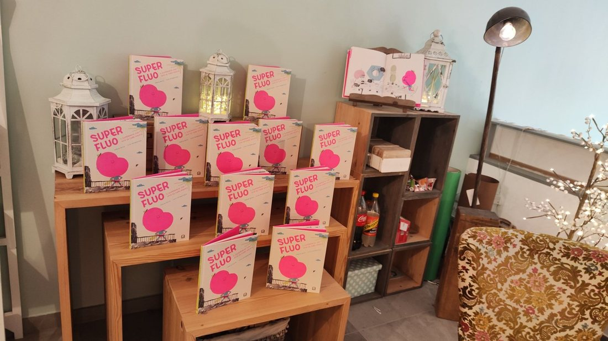

Book presentation
Libreria Sottobosco
A presentation of Super Fluo at Libreria Sottobosco, sharing the book and its world of everyday superpowers.


Picture book
The superhero who cannot do anything
Some superheroes are born lucky, with astonishing abilities. Then there is Super Fluo, who cannot do anything at all.English rendering of the Italian excerpt on this website; not a quotation from a published English edition.
Not all superheroes are the same. Some can find Dad's glasses, warm up lunch with a touch or fix anything by turning their hands into tools. Super Fluo is another story. He is convinced he has extraordinary powers: making flowers grow, moving the Sun through yoga and stopping the rain after days of intense concentration. But there is one person for whom he truly is a superhero: his beloved Granny. For her, he finds a way to make flowers grow, move the Sun, stop the rain and, above all, make her laugh.
Buy from Amazon. External links open in a new tab.
A presentation of Super Fluo at Libreria Sottobosco, sharing the book and its world of everyday superpowers.

Alfredo Paniconi looks at the writing, illustrations and production, focusing on the shift from humour to tenderness.
ReadA reading centred on self-esteem, empathy and the value of small acts of care.
ReadThe editors of la Lettura recommend Super Fluo in their book tips, introducing its hero and his unlikely superpowers.
ReadAn episode of I libri di Radio Kids, in the series curated by Andersen magazine, dedicated to Super Fluo.
ListenSuper Fluo among the booksellers' recommendations in the newsletter Un inizio caleidoscopico.
Read